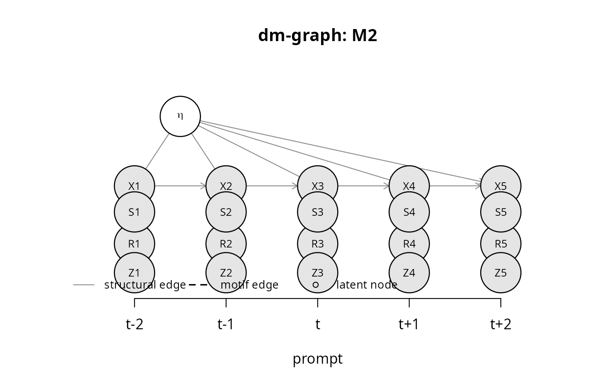
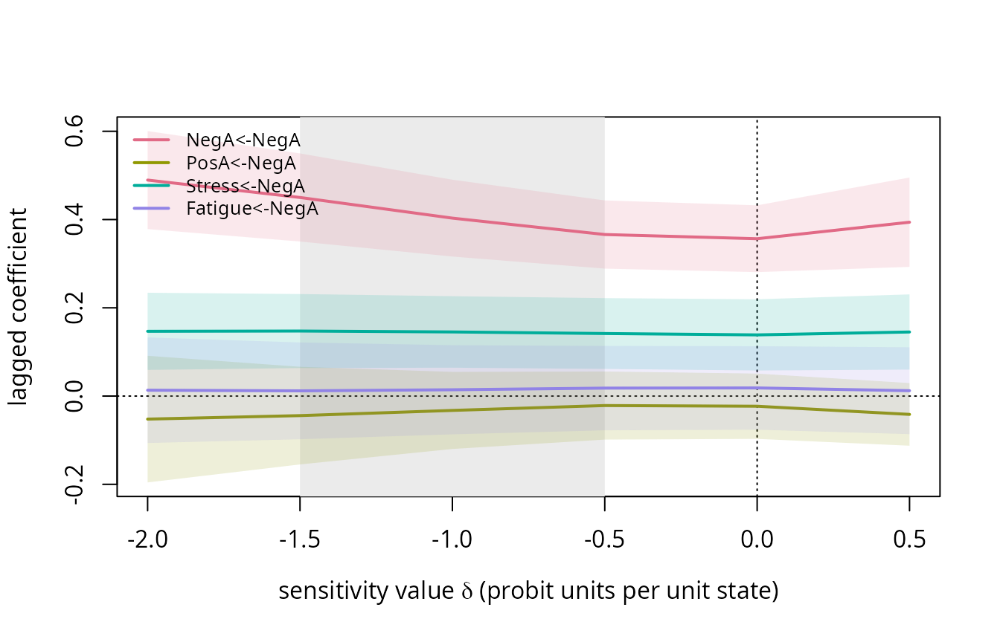

Getting started: the silentema workflow
Hsiu-Ting Yu
Source:vignettes/silentema-workflow.Rmd
silentema-workflow.RmdExperience-sampling participants skip prompts, and the reasons are
rarely unrelated to the states being measured. silentema
provides a graphical language for saying which mechanism is assumed (a
dynamic missingness graph), a checker that says which quantities of a
two-level VAR(1) remain estimable under that mechanism, two tests that
ask the data whether skipped prompts were informative, and a sensitivity
analysis for the one mechanism that cannot be repaired by estimation
alone: self-censoring, where the current state itself causes the skip.
This vignette walks through one complete analysis on simulated data. The
other vignettes go deeper into each step:
vignette("dm-graphs"),
vignette("testing-informativeness"),
vignette("sensitivity-analysis") and
vignette("simulation-and-design").
0. The data format
Every estimator takes a long data frame with one row per scheduled prompt, answered or not:
| Column | Content |
|---|---|
id |
person identifier |
time |
integer prompt index, increasing by one from one scheduled prompt to the next within a person |
R |
response indicator, 1 = answered (if absent, a prompt counts as answered when all state columns are non-missing) |
| state columns | the momentary states, NA at skipped prompts |
day (optional) |
day index; adjacent pairs are then formed within days only, so the overnight gap is not treated as a lag-1 transition |
| sensor, probe, context (optional) | an always-observed channel, a forced-response indicator, recorded contexts |
Rows for skipped prompts must be present (with R = 0 and
NA states): the tests and the response models need to know
that a prompt was scheduled and skipped. Two rows whose
time values differ by more than one are not adjacent. Real
data usually need a reshaping step to reach this format;
simulate_ema() produces it directly.
1. Simulate a study with self-censoring
library(silentema)
sim <- simulate_ema(N = 60, T = 40, motifs = "M2", compliance = 0.70, delta = -1,
sensor_cor = 0.6, p_probe = 0.05, days = 5, seed = 1)
sim
#> Simulated EMA data: 60 persons x 40 prompts, 4 variables
#> motifs: M2 realized response rate: 0.7
head(sim$data)
#> id time day R NegA PosA Stress Fatigue S Z
#> 1 1 1 1 1 1.936136574 4.844164 0.92785937 1.299934 -0.7399196 0
#> 2 1 2 1 1 1.584265346 4.232716 -0.06654146 3.908155 1.0259370 0
#> 3 1 3 1 1 0.006044839 4.811683 0.09100665 2.370911 -0.3047950 1
#> 4 1 4 1 1 -0.135652698 3.759730 2.40007772 4.401480 -1.3248360 0
#> 5 1 5 1 1 -1.452317972 3.684295 0.51494056 3.981258 -0.9807267 0
#> 6 1 6 2 1 -0.496998276 6.128918 0.43275347 4.684704 -2.1736344 0Four momentary states (negative affect, positive affect, stress,
fatigue) follow a two-level VAR(1) with person-specific means. Prompts
are skipped with a probit probability that decreases in the current
level of negative affect (delta = -1). A passive sensor
correlated .6 with negative affect is observed at every prompt, and 5%
of prompts are randomized probes that are always answered. Eight days of
five prompts each.
2. Declare a dynamic missingness graph and check recoverability
g <- dm_graph(motifs = "M2", sensor = TRUE, probe = TRUE)
g
#> Dynamic missingness graph (window of 5 prompts)
#> motifs: M2
#> context: none
#> sensor: TRUE probe: TRUE
#> nodes: 21 edges: 24
plot(g)
recoverability(g)
#> Recoverability report for motifs: M2
#>
#> * transition kernel (Phi, Psi, contemporaneous network)
#> [NOT recoverable] sensitivity analysis (tilt profile) or a calibration design is required
#> condition: R_t and X_t are d-connected given {X_{t-1},eta}
#> * transition kernel from probe prompts
#> [recoverable] complete pairs restricted to probe prompts (Z_t = 1); delta calibrated by the probe contrast
#> condition: Z_t _||_ X_t | {X_{t-1},eta}; R_t = 1 whenever Z_t = 1
#> * person mean via observed within-person mean
#> [NOT recoverable] biased
#> condition: R_t _||_ X_t | {eta}
#> * person mean via recovered dynamics
#> [NOT recoverable] not available
#> condition: transition kernel recoverable
#> * between-person law (mu, Sigma_mu), person-weighted
#> [NOT recoverable] not recoverable
#> condition: a person-mean estimator is available and P(R_t = 1 | eta) > 0
#> * between-person law, prompt-weighted (pooling answered prompts)
#> [NOT recoverable] biased: response rate depends on the person's states
#> condition: R_t _||_ X_t | {empty set}
#> * silence test (coefficient of R_t in X_{t+1} ~ X_{t-1} + R_t, within person)
#> non-null expected: silence is informative
#> condition: R_t _||_ X_{t+1} | {X_{t-1},eta,R_{t-1},R_{t+1}}
#> * sensor-gap test (coefficient of R_t in S_t ~ X_{t-1} + R_t, within person)
#> non-null expected: delta can be calibrated from the sensor gap
#> condition: R_t _||_ S_t | {X_{t-1},eta,R_{t-1}}The report says that the transition kernel (and therefore the temporal and contemporaneous networks) is not structurally recoverable under self-censoring, that the silence test and the sensor-gap test are expected to reject, and that the kernel can be recovered from probe prompts. Compare with a recoverable mechanism and with reactivity, under which the dynamics are recovered but the person mean must be read from the answered prompts rather than from the dynamics:
recoverability(dm_graph(c("M1", "M4")))
#> Recoverability report for motifs: M1 + M4
#>
#> * transition kernel (Phi, Psi, contemporaneous network)
#> [recoverable] complete adjacent pairs, within-person (person intercepts)
#> condition: R_t _||_ X_t | {X_{t-1},eta,zeta} and R_{t-1} _||_ X_t | {X_{t-1},eta,zeta, R_t}
#> * person mean via observed within-person mean
#> [NOT recoverable] biased
#> condition: R_t _||_ X_t | {eta,zeta}
#> * person mean via recovered dynamics
#> [recoverable] mu_i = (I - Phi)^{-1} c_i from the recovered kernel
#> condition: transition kernel recoverable
#> * between-person law (mu, Sigma_mu), person-weighted
#> [recoverable] one recovered mean per person (dynamics-recovered means), persons weighted equally; positivity assumed
#> condition: a person-mean estimator is available and P(R_t = 1 | eta) > 0
#> * between-person law, prompt-weighted (pooling answered prompts)
#> [NOT recoverable] biased: response rate depends on the person's states
#> condition: R_t _||_ X_t | {empty set}
#> * silence test (coefficient of R_t in X_{t+1} ~ X_{t-1} + R_t, within person)
#> null expected (test valid as a test of the recoverable class)
#> condition: R_t _||_ X_{t+1} | {X_{t-1},eta,zeta,R_{t-1},R_{t+1}}
recoverability(dm_graph("M6"))
#> Recoverability report for motifs: M6
#>
#> * transition kernel (Phi, Psi, contemporaneous network)
#> [recoverable] complete adjacent pairs recover the assessment-conditioned kernel p(X_t | X_{t-1}, eta, R_{t-1} = 1): Phi and Psi are unaffected when reactivity shifts the level (additive), but the person intercept absorbs the shift
#> condition: reactivity edge R_{t-1} -> X_t declared; all complete pairs have R_{t-1} = 1
#> * person mean via observed within-person mean
#> [recoverable] mean of answered prompts, per person
#> condition: R_t _||_ X_t | {eta}
#> * person mean via recovered dynamics
#> [NOT recoverable] biased: the answered-pair intercept is the intercept of the assessed process (it absorbs the reactivity shift)
#> condition: transition kernel recoverable and no reactivity
#> * between-person law (mu, Sigma_mu), person-weighted
#> [recoverable] one recovered mean per person (observed means), persons weighted equally; positivity assumed
#> condition: a person-mean estimator is available and P(R_t = 1 | eta) > 0
#> * between-person law, prompt-weighted (pooling answered prompts)
#> [recoverable] pooled answered prompts
#> condition: R_t _||_ X_t | {empty set}
#> * silence test (coefficient of R_t in X_{t+1} ~ X_{t-1} + R_t, within person)
#> non-null expected: silence is informative
#> condition: R_t _||_ X_{t+1} | {X_{t-1},eta,R_{t-1},R_{t+1}}3. Ask the data whether silence was informative
st <- silence_test(sim$data, sim$vars, day = "day")
st
#> Silence test: X_{t+1} ~ X_{t-1} + R_t (within person), 757 triples, 142 with a skipped middle prompt
#> variable coef_R se z p
#> NegA -0.279 0.095 -2.94 0.00470
#> PosA 0.230 0.093 2.48 0.01600
#> Stress -0.353 0.094 -3.76 0.00039
#> Fatigue 0.051 0.120 0.43 0.67000
#> Joint Wald test: statistic = 18.86 on 4 df, p = 0.00227 [SE: cluster; t / F with G - 1 df reference]
#> Interpretation: coefficients near zero are expected under the recoverable motifs; a negative coefficient on a variable means the states hidden by skips were higher.
sg <- sensor_gap_test(sim$data, sim$vars, sensor = "S", day = "day")
sg
#> Sensor-gap test: S_t ~ X_{t-1} + R_t (within person), 1336 prompts with answered predecessor
#> coefficient of R_t: -0.440 (SE 0.062), z = -7.12, p = 1.67e-09 [SE: cluster]
#> sensor loading on states (answered prompts): 0.637 -0.007 0.002 0.001
fatigue_check(sim$data, day = "day")
#> Fatigue check over 1920 consecutive prompts
#> response rate after an answered prompt: 0.770; after a skipped prompt: 0.563; difference 0.207 (person-mean difference 0.090)
#> response rate by study quarter: 0.695 0.693 0.707 0.705Both coefficients of R_t are negative: the states hidden
by skipped prompts were higher than the reported ones. The fatigue check
shows the response persistence that burden (M3) would produce; here it
is modest and arises from the autocorrelated states, as expected without
burden.
4. Estimate, profile, calibrate
fit0 <- fit_pairs(sim$data, sim$vars, day = "day")
fit0
#> Within-person VAR(1) from 1029 complete adjacent pairs, 60 persons (half-panel jackknife)
#> Lagged coefficients Phi (rows = outcome at t, columns = predictor at t-1):
#> NegA PosA Stress Fatigue
#> NegA 0.357 -0.001 0.050 0.041
#> PosA -0.023 0.304 -0.007 -0.055
#> Stress 0.139 -0.060 0.370 0.129
#> Fatigue 0.018 -0.113 -0.034 0.335
#> Contemporaneous partial correlations (innovations):
#> NegA PosA Stress Fatigue
#> NegA 1.000 -0.289 0.228 0.052
#> PosA -0.289 1.000 -0.001 -0.055
#> Stress 0.228 -0.001 1.000 0.173
#> Fatigue 0.052 -0.055 0.173 1.000
#> Between-person means (dynamics-recovered): 1.934 4.218 2.573 2.949
confint(fit0)[1:4, ]
#> 2.5 % 97.5 %
#> NegA<-NegA 0.280871621 0.43223611
#> NegA<-PosA -0.053062748 0.05109106
#> NegA<-Stress -0.007243953 0.10639392
#> NegA<-Fatigue -0.020598477 0.10212502
prof <- tilt_profile(sim$data, sim$vars, delta_grid = seq(-2, 0.5, by = 0.5), day = "day", probe = "Z")
prof
#> Tilt profile over delta in { -2, -1.5, -1, -0.5, 0, 0.5 } for NegA
#> Autoregressive coefficient of the self-censoring variable along the grid ( 1029 complete pairs):
#> delta estimate lower upper ess converged
#> -2.0 0.489 0.378 0.601 552 TRUE
#> -1.5 0.450 0.350 0.550 783 TRUE
#> -1.0 0.403 0.316 0.490 925 TRUE
#> -0.5 0.366 0.289 0.443 1008 TRUE
#> 0.0 0.357 0.281 0.432 1029 TRUE
#> 0.5 0.394 0.293 0.495 990 TRUE
plot(prof, plausible = c(-1.5, -0.5))
The autoregressive coefficient of negative affect rises as the analysis allows for stronger self-censoring; at the generating value (-1) it is close to the population value of .40. Three designs calibrate the sensitivity value:
cs <- calibrate_delta(prof, sim$data, method = "sensor", day = "day")
cs
#> Calibration of delta (NegA) by the sensor method
#> observed statistic: -0.440 (SE 0.062)
#> calibrated delta: -0.740 95% interval: [-0.967, -0.512]
plot(cs)
calibrate_delta(prof, sim$data, method = "probe", day = "day")
#> Calibration of delta (NegA) by the probe method
#> observed statistic: 0.241 (SE 0.099)
#> calibrated delta: -1.192 95% interval: [-Inf, -0.198]The sensor calibration is the most precise of the three designs, but it is not immune to sampling variability: in this sample its interval stops short of the generating value of -1, whereas the probe calibration (with only 5% probes) is much less precise and its interval is open on one side. Yu (2026) reports the coverage of these intervals over many replications; a single study should report all available calibrations and let the plausible interval cover their union.
The post-skip contrast needs no extra channel but relies fully on the
functional form (it simulates from each fitted model; n_sim
controls the number of simulated data sets per grid value, and
burden = "fit" adds a burden term calibrated to the
observed response persistence when M3 is declared together with M2):
calibrate_delta(prof, sim$data, method = "postskip", day = "day", n_sim = 5, seed = 2)
#> Calibration of delta (NegA) by the postskip method
#> observed statistic: -0.279 (SE 0.095)
#> calibrated delta: -0.964 95% interval: [-Inf, -0.176]5. Report
break_even(prof, delta_max = 1.5)[1:4, ]
#> coef estimate_0 significant_0 sign_flip_delta
#> 1 Fatigue<-Fatigue 0.33537104 TRUE NA
#> 2 Fatigue<-NegA 0.01843167 FALSE NA
#> 3 Fatigue<-PosA -0.11254432 TRUE NA
#> 4 Fatigue<-Stress -0.03362374 FALSE NA
#> significance_flip_delta set_lower set_upper band_lower band_upper
#> 1 NA 0.32322915 0.33948482 0.25950306 0.40066046
#> 2 NA 0.01184862 0.01843167 -0.09782638 0.12152362
#> 3 NA -0.12334249 -0.10889865 -0.21130170 -0.02099467
#> 4 NA -0.03700220 -0.02996109 -0.11256409 0.05171477
cat(missingness_declaration(g, silence = st, sensor_gap = sg, profile = prof, calibration = cs,
plausible = c(-1.5, -0.5)), sep = "\n")
#> # Missingness declaration (silentema)
#>
#> ## 1. Design facts
#> - Prompts per day, days, scheduling, and the definition of a scheduled prompt: [to complete]
#> - Response rate overall and by person (median, range): [to complete]
#> - Whether prompt-level (whole prompt) or item-level missingness occurs: [to complete]
#>
#> ## 2. Declared dynamic missingness graph
#> - Motifs: M2
#> - Context: none
#> - Passive sensor available: TRUE; randomized probes: TRUE
#> - Substantive justification for each declared edge (cite compliance evidence or pilot data): [to complete]
#>
#> ## 3. Recoverability verdicts
#> - transition kernel (Phi, Psi, contemporaneous network): NOT recoverable; sensitivity analysis (tilt profile) or a calibration design is required
#> - transition kernel from probe prompts: recoverable; complete pairs restricted to probe prompts (Z_t = 1); delta calibrated by the probe contrast
#> - person mean via observed within-person mean: NOT recoverable; biased
#> - person mean via recovered dynamics: NOT recoverable; not available
#> - between-person law (mu, Sigma_mu), person-weighted: NOT recoverable; not recoverable
#> - between-person law, prompt-weighted (pooling answered prompts): NOT recoverable; biased: response rate depends on the person's states
#> - silence test (coefficient of R_t in X_{t+1} ~ X_{t-1} + R_t, within person): non-null expected: silence is informative
#> - sensor-gap test (coefficient of R_t in S_t ~ X_{t-1} + R_t, within person): non-null expected: delta can be calibrated from the sensor gap
#>
#> ## 4. Tests of informativeness
#> - Silence test (757 triples, 142 with a skipped middle prompt; SE: cluster):
#> - NegA: coefficient of R_t = -0.279 (SE 0.095), p = 0.0047
#> - PosA: coefficient of R_t = 0.230 (SE 0.093), p = 0.016
#> - Stress: coefficient of R_t = -0.353 (SE 0.094), p = 0.00039
#> - Fatigue: coefficient of R_t = 0.051 (SE 0.120), p = 0.67
#> - joint test: statistic 18.863 on 4 df, p = 0.0023
#> - Sensor-gap test: coefficient of R_t = -0.440 (SE 0.062), p = 1.7e-09
#> - Fatigue check (response rate after answered vs skipped prompt; by study quarter): [to complete]
#>
#> ## 5. Sensitivity analysis
#> - Sensitivity parameter: delta, probit units per unit of NegA; grid {-2, -1.5, -1, -0.5, 0, 0.5}; response-model intercept: common
#> - Effective number of complete pairs along the grid: 552, 783, 925, 1008, 1029, 990 (of 1029)
#> - Calibration by the sensor method: delta = -0.740, 95% interval [-0.967, -0.512]
#> - Plausible interval used for the band: [-1.500, -0.500]
#> - Identified set and band over the plausible interval (effects of the self-censoring variable):
#> - Fatigue<-NegA: estimate at delta = 0: 0.018; set [0.012, 0.018]; band [-0.098, 0.122]; sign change at none on the grid; significance change at none on the grid
#> - NegA<-NegA: estimate at delta = 0: 0.357; set [0.357, 0.450]; band [0.281, 0.550]; sign change at none on the grid; significance change at none on the grid
#> - PosA<-NegA: estimate at delta = 0: -0.023; set [-0.044, -0.021]; band [-0.155, 0.066]; sign change at none on the grid; significance change at none on the grid
#> - Stress<-NegA: estimate at delta = 0: 0.139; set [0.139, 0.147]; band [0.058, 0.231]; sign change at none on the grid; significance change at none on the grid
#>
#> ## 6. What is reported in the paper
#> - Estimates under the declared graph, the sensitivity band, and this declaration.break_even() returns, for every lagged coefficient, the
sensitivity value at which its sign or its significance would change,
and the range of estimates over the plausible interval (the identified
set). missingness_declaration() writes the declaration that
the accompanying article recommends for preregistrations and reports,
filling the sections for which objects are supplied.
6. Full-information maximum likelihood under missing at random
For comparison, the likelihood that dynamic structural equation models maximize:
fit_fiml(sim$data, sim$vars)
#> FIML (MAR) two-level VAR(1) by state-space EM: 60 persons, 40 prompts; 7 iterations, converged
#> Lagged coefficients Phi:
#> NegA PosA Stress Fatigue
#> NegA 0.358 0.006 0.100 0.037
#> PosA -0.065 0.325 -0.009 -0.042
#> Stress 0.163 -0.031 0.410 0.153
#> Fatigue -0.005 -0.091 0.021 0.324
#> Contemporaneous partial correlations:
#> NegA PosA Stress Fatigue
#> NegA 1.000 -0.306 0.250 0.044
#> PosA -0.306 1.000 -0.005 -0.018
#> Stress 0.250 -0.005 1.000 0.161
#> Fatigue 0.044 -0.018 0.161 1.000
#> Means: 2.082 4.149 2.752 2.95Under self-censoring this estimator is biased in the same direction as the answered-pairs estimator, because both treat the mechanism as ignorable.
Where to go next
- Which mechanism to declare, and what follows from it:
vignette("dm-graphs"). - How the tests work, their power and their failure modes:
vignette("testing-informativeness"). - Tilting, break-even values, calibration and reporting in depth:
vignette("sensitivity-analysis"). - Planning a study with the simulator:
vignette("simulation-and-design"). - The accompanying article (Yu, 2026) and its archived materials: https://osf.io/x6d2t/.